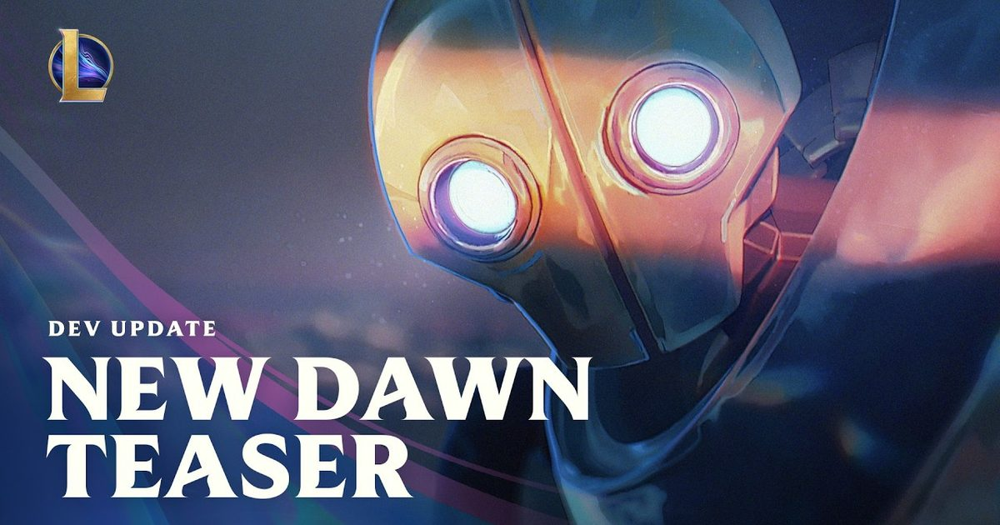

2026-11-15 · 版本深读

11 月 14 日，S16 全球总决赛决赛在布鲁克林巴克莱中心开打之前，拳头放出了两分钟的预告片， 给那个传了快一年的「英雄联盟 2」正式定名——《英雄联盟：曙光》（League of Legends: New Dawn）。 预告上线约 14 小时播放破 120 万。大多数报道会停在「2027 年大更新」的通稿层面。 真正值得拆的是：拳头为什么在「最容易赚钱的选项」上说不； 客户端并入 Hextech 引擎意味着什么；以及预告里那个一闪而过的 Volt 符文和疑似双入口的资源坑位——后两者可能是比换皮更深的玩法地震。
先把时间线摆正，因为「曙光」不是临时起意。2025 年 12 月，「League Next」项目被媒体曝光， 拳头同日回应确认存在一个大更新，并明确否认真会做独立续作——执行制作人 Paul「Pabro」Bellezza 原话： 「经常有人问我们会不会做英雄联盟 2，答案是过去没有、现在也没有。」 2026 年 6 月，客户端迁移到拳头自研 Hextech 引擎的问题落定（顺带辟谣了 UE5 传闻）； 9 月，League 工作室负责人 Andrei「Meddler」van Roon 主动给预期降温，说 Worlds 只会带一个小更新； 11 月 14 日，定名「曙光」，2027 年内上线，完整情报 2027 年 1 月公开。 也就是说，这场官宣其实是被玩家社区「催」出来的存量信息定名，而不是突然的战略转向。
还有一个容易被忽略的信号：2026 年全年只上线了一个新英雄 Locke（6 月 24 日）。 社区维护的 Wiki 声称英雄团队大部分人被抽调去了这个大更新项目——拳头没有官方确认， 但「一年一个新英雄」在这个更新节奏的游戏里本身就是异常值。2026 的内容荒，是给 2027 付的定金。
客户端并入 Hextech。这是对老玩家最实际的改动。现状是：你打开的启动器和对局本体是两套完全分离的技术栈， 选英雄界面卡顿、加载缓慢、商店和资料页渲染粗糙，根源都在这里。「曙光」把客户端直接整合进升级后的 Hextech 引擎， 独立启动器将不复存在——选人界面看起来接近 Wild Rift 的布局，预告还出现了 3D 大厅。 这相当于承认：过去十年「客户端能用就行」的省钱方案，走到头了。
峡谷自 2014 年以来首次大改。画面更明亮饱和，红buff树精更凶，巨龙与男爵重做， 小兵甚至有了「走路一种表情、攻击另一种表情」的状态——十六年来第一次。 更关键的是结构性变化：预告画面显示野区资源坑位出现了双入口设计。 这里有个各信源打架的细节：中文报道普遍写「巴龙坑双入口」，英文站多写「小龙坑」—— 在拳头 1 月给出完整演示前，建议都别急着下结论。但方向是确定的： 单入口坑位意味着「堵一个门就能控视野」，双入口意味着绕后、视野布防、惩戒博弈全部重算。 打野和辅助玩家的 January 前瞻必看。
Volt 符文与「本命英雄羁绊」。预告里闪过一个现行符文系统里不存在的「Volt」图标。 社区传得更远的版本（来自非官方渠道，谨慎看待）是：符文系统将在 2027 年被英雄专属配装（Loadout）取代—— 比如金克丝的大招可以选「加伤害且能打塔」之类的分支。如果属实，这比换地图激进得多： 符文是全民通用语言，Loadout 则把构筑深度下放到英雄个体。van Roon 此前还提过辅助位置将迎来彻底革新。 这些目前都属于「预告暗示、未官方证实」的范畴，1 月见分晓。
做一款《英雄联盟 2》，商业上其实更顺：新引擎、新买量故事、老玩家回流潮。 拳头拒绝的理由也写得明白：LOL 的资产不只是代码——173 个英雄的皮肤库存、账号等级、段位历史， 以及一个建立在「同一张地图」上十七年的电竞叙事。续作等于要求全体玩家重新证明自己的投入， 电竞则要面对「S 赛冠军分别在两个游戏里产生」的合法性危机。原地重铸保住了全部存量资产， 代价是工程难度指数级上升：要在不停服、不分家的前提下，把一套 2009 年围绕单线程 CPU 与网吧兼容性设计的架构， 换成 DX12/Vulkan、多线程渲染的现代管线——还不能让低配机掉帧，因为这是竞技游戏，帧时间稳定比画面华丽优先。
未解的难题也在明面上：职业赛事怎么排——在 2027 赛季中间换一张结构变了的新峡谷，赛程怎么衔接，拳头一字未提； 没有公布任何 PBE 测试计划；皮肤与进度继承也只有「这是更新不是新游戏」的框架性承诺。 另一个耐人寻味的注脚是：League Classic 怀旧模式将于 2027 年 1 月停运。 拳头上半年专门做了个让玩家回访旧版峡谷与旧版英雄的模式，结果几周后就宣布收场—— 官方用实验证明了「 nostalgia 养不活一款这个体量的游戏」，然后调头全力向前。这两件事放在一起看，逻辑是闭环的。
我们的观察：把过去一年的节奏连起来：12 月泄露即回应（控制叙事权）→ 6 月引擎问题落定（辟谣 UE5）→ 9 月主动降温（避免 Worlds 前预期爆炸）→ 11 月决赛日定名（借全球最大观赛舞台免费曝光）→ 1 月全公开（留三个月做内容运营）。 每一步都在管理预期，这是教科书级别的长期项目公关节奏。
我们的观点：社区把「曙光」叫 LOL2，是情绪；拳头拒绝叫 LOL2，是算术。 但我们想提醒一件事：原地重铸对低配玩家是真正的生死考验。 LOL 在中国能长红十七年，网吧机器能跑是隐性前提。官方反复强调「帧时间稳定优先于画面」， 说明他们知道——新峡谷如果让 GTX 1060 玩家掉出 144 帧，视觉翻新越漂亮，流失越快。
我们的案例对比：同类「原地大重铸」的先例不多：2014 年拳头自己重做过一次峡谷（纯视觉+局部地形）， 2016 年重做过一次客户端（结果反而成了十年槽点）。这次的差别在于范围——客户端、地图、符文、新手体验四线同时动。 历史经验说：多线并行的重构，延期概率远大于缩水概率。「2027 年内」这个承诺，我们持保留态度。
我们的实验：我们给 1 月前瞻列了一张验证清单：① Volt 是新符文还是 Loadout 入口； ② 双入口坑位到底是巴龙还是小龙（或两者）；③ 是否公布 PBE 时间表——如果连测试档期都不给，「2027 年内」大概率要滑； ④ 职业赛事过渡方案。四项里命中三项以上有明确答案，这次更新才算「信息真实落地」。
我们的评分理由：打 7.9 分评的是「官宣的信息密度与诚意」： 定名、时间表、四大方向、官方答疑页一次给齐，而且提前一年的预期管理几乎没有失误； 扣分在玩法层几乎全靠暗示——Volt、双入口、Loadout 传闻都还是黑箱， 对一款竞技游戏来说，玩法改动才是玩家真正要签署的合同。 一句话总结：拳头用「不做 LOL2」保住了十七年的资产账本， 现在轮到工程团队去还那笔从 2009 年欠到今天的技术债——1 月的前瞻，才是真正的合同条款。